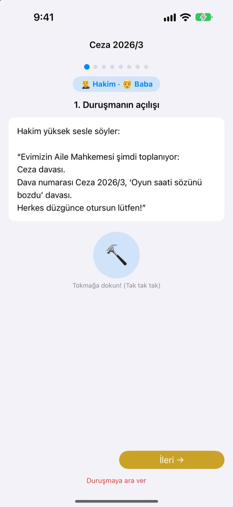
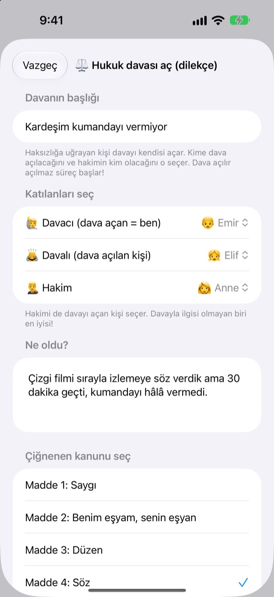
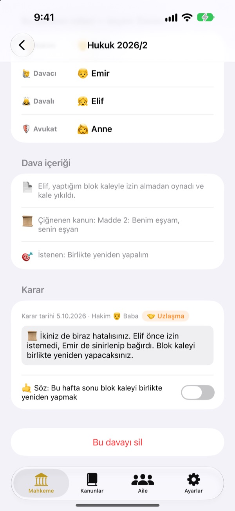
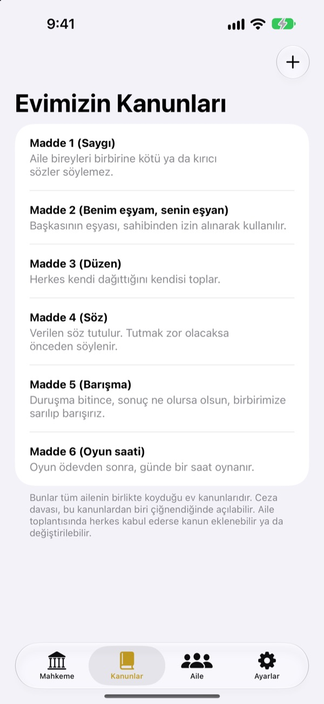

Haksızlık mı?
Ağlama, mahkemeye gidelim.
Çocuğunuz davacı olarak davayı kendisi açar, aile de hâkim ve avukat rollerini paylaşır. Her adımda bir metin sıranın kimde olduğunu ve ne söyleneceğini söyler, böylece ilk duruşma bile gerçeği gibi akar.
Reklam yok, satın alma yok, kayıt yok. Her şey bu cihazda kalır.

Bir duruşma açın
Kısa bir dava: "Kardeşim kumandayı vermiyor." Üstten kelime düzeyini değiştirin, tokmağa vurun ve zamanlayıcıyı başlatın. Ses çıkar, ses düzeyini kontrol edin.
"Önce o başladı!" Hep hakem olmaktan yoruldunuz mu?
Kavga çıkınca kararı neredeyse her zaman bir yetişkin verir. Kaybeden haksızlığa uğradığını düşünüp ağlar, kazanan da neden kazandığını tam bilmez. Aile Mahkemesi çocuklara bir sıra verir: kendi tarafını sonuna kadar anlat, öbür tarafı da sonuna kadar dinle. Karar da yalnızca cezayla değil, bir sözle biter.
Haksızlığa uğrayan davayı kendisi açar
Bir şeyi haksız bulan davacı olur ve davayı açar. Kime karşı açılacağına ve kimin hâkim olacağına davacı karar verir. Çocuklar anneyle babaya bile dava açabilir.
Birinin ev kuralını çiğnediğini mi gördünüz? Savcı olun ve ceza davası açın. Hâkim yalnızca davacı ya da davalı olmayan biri olabilir.

Karar bir sözle biter
Kararla birlikte bir söz ya da ceza belirlenir ve yerine gelince işaretlenir. Kapanan davalar ailenizin geçmiş kararları olur.
Önerilen cezalar zararı gidermek ve gönül almakla başlar; cezalandırmaktan çok onarmaya yakındır. Oyun ya da televizyonu kısmak en son çaredir.

Eviniz sizin, kanunlarınız da
Saygı, toparlanmak ve sözünü tutmak gibi ailece kararlaştırdığınız kuralları madde olarak yazın, istediğiniz zaman ekleyip değiştirin. Dava dilekçesinde çiğnenen kanun seçilir.
"Mahkemeyi öğren" bölümü hâkimin, davacının, savcının ve avukatın ne yaptığını ve duruşmanın nasıl ilerlediğini anlatır.

Üç adımda başlayın
- 1
Aileyi ekleyin
Bir ad ve bir emoji yeter. Hesap gerekmez.
- 2
Dava açın
Haksızlık hukuk davası, ev kuralı ihlali ceza davası olur. Sonra hâkimi seçin.
- 3
Duruşmayı açın
Metni takip edin, süreyi zamanlayıcıyla tutun ve kararı tokmakla açıklayın.
Çocuğunuzla birlikte büyüyen kelimeler
- Hakim
- Kolay dil: Hakem · Hukuk terimleri: Mahkeme Başkanı
- Davacı
- Kolay dil: Haksızlığa uğrayan · Hukuk terimleri: Davacı
- Davalı
- Kolay dil: Cevap veren · Hukuk terimleri: Davalı
- Savcı
- Kolay dil: Haber veren · Hukuk terimleri: Savcı
- Sanık
- Kolay dil: Cevap veren · Hukuk terimleri: Sanık
- Avukat
- Kolay dil: Yardımcı · Hukuk terimleri: Avukat
- Hukuk
- Kolay dil: Haksızlık · Hukuk terimleri: Hukuk
- Ceza
- Kolay dil: Söz bozma · Hukuk terimleri: Ceza
Ayarlar'dan kelime düzeyini seçin; ekrandaki ve metindeki kelimeler hep birlikte değişir. Okul öncesi için Kolay dil, ilkokul için Standart ile başlayın.
Sık sorulan sorular
Kaç yaşından itibaren?
Okumayı bilen her çocuk bir ebeveynle oynayabilir. Metin, ipuçları ve Kolay dil düzeyiyle, bir yetişkin sesli okursa daha küçükler de katılabilir.
Gerçekten ücretsiz mi?
Evet. Reklam yok, özellik açan satın alma yok. Ayarlar'da geliştiriciyi desteklemek için isteğe bağlı bir bahşiş var; hiçbir şeyi açmaz ya da kilitlemez.
İnternet gerekli mi?
Hayır. Duruşmalar ve kayıtlar tamamen çevrimdışı çalışır. İnternet ve iCloud girişi yalnızca Ayarlar'dan geri bildirim göndermek için gerekir.
Kayıtlar nerede saklanıyor?
Aile, kanunlar, duruşmalar ve kararlar yalnızca cihazda saklanır, hiçbir sunucuya gönderilmez. Geliştiriciye yalnızca sizin gönderdiğiniz geri bildirimler ve sizi tanımlamayan anonim kullanım istatistikleri ulaşır.
Yedekleyebilir veya başka cihaza taşıyabilir miyim?
Ayarlar'daki "Kayıtları dışa aktar" ile her şeyi bir dosyaya aktarın, diğer cihazda "Kayıtları içe aktar" ile her şey olduğu gibi geri gelir. Eski web sürümünün yedekleri de yüklenebilir.
iPad'de çalışıyor mu?
Evet, hem iPhone'da hem iPad'de. Bütün aile etrafında otururken büyük ekran harikadır.
Cezalar çok ağır olursa?
Savcı ceza istediğinde metin, cezanın çok ağır olmaması ve yerine getirilebilir olması gerektiğini hatırlatır. Öneriler onarmakla başlar: zararı gidermek, gönül almak, kendini karşı tarafın yerine koymak.
Her şeyi nasıl silerim?
Uygulamayı silince cihazdaki tüm kayıtlar da silinir. Hiçbir şey cihazdan dışarı çıkmadığı için başka yerde de bir şey kalmaz. Gönderdiğiniz geri bildirimi sildirmek için bize e-posta yazın.
Hata, fikir ya da başka bir şey mi var? leeo@kakao.com adresine yazın. Uygulamanın ayarlarından da geri bildirim gönderebilirsiniz.